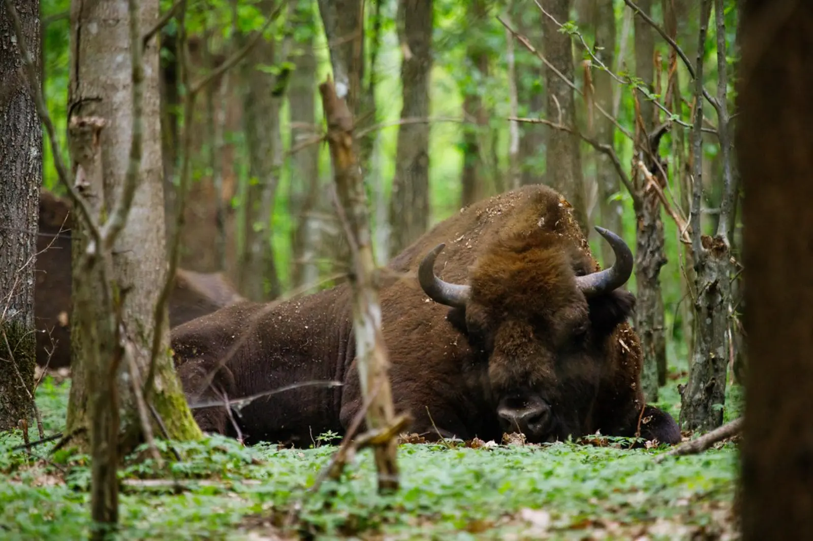

Orthodox churches, Tatar mosques, and wooden cottages in one landscape. Villages where religions and cultures intersect. Slow travel through Podlasie villages.
Why Podlasie villages, differently
Podlasie is a region where Catholics, Orthodox Christians, Tatars, and Jews lived side by side for centuries. This multiculturalism is still visible today in the village landscape — in Orthodox churches, mosques, synagogues, roadside shrines. Podlasie villages are like an open-air museum where every building tells a different story. This is one of the few places in Poland where within a few kilometres you can see an Orthodox church, a Tatar mosque, and a Catholic church.
Slow travel through Podlasie villages is a journey through cultures and religions. Instead of rushing from village to village, stop in one longer — talk to residents, enter the church, see the mizar (Tatar cemetery), listen to how the village lives. Each village has its own history, its own temples, its own inhabitants. This is a journey that rewards those who slow down — the longer you are in one place, the more you can truly understand about the multiculturalism of Podlasie.
What to see
Podlasie villages split into several groups: villages with Orthodox churches (Trześcianka, Soce, Puchły), Tatar villages (Kruszyniany, Bohoniki), villages with wooden architecture (around Supraśl), villages in the Knyszyn and Białowieża Forests. Exploring the region takes 2–3 days.
Villages with Orthodox churches
- Trześcianka — a village with a wooden Orthodox Church of St. Michael the Archangel from the 19th century. The interior delights with an iconostasis and polychromes. Worth visiting with a guide.
- Soce — a village with a wooden Orthodox Church of St. John the Baptist from the 19th century. Less known than Trześcianka, but equally beautiful.
- Puchły — a village with a wooden Orthodox Church of the Protection of the Mother of God from the 19th century. There is a miraculous icon of the Mother of God here, to which the faithful from the whole region make pilgrimages.
- Villages around Supraśl — Gródek, Kruszyniany, Bohoniki — villages with wooden architecture and traces of multicultural history.
Tatar villages
- Kruszyniany — a Tatar village with the oldest mosque in Poland (from the 18th century). Next to the mosque is a mizar — a Tatar cemetery. Worth visiting with a guide who will talk about the history of Tatars in Poland.
- Bohoniki — a Tatar village with the second active mosque in Poland (from the 19th century). Next to the mosque is a mizar — a Tatar cemetery. Worth it for contrast with Kruszyniany.
- Mizary — Tatar cemeteries, with characteristic tombstones with wooden crescents. Worth seeing both — in Kruszyniany and Bohoniki.
Wooden architecture and nature
- Villages in the Knyszyn Forest — villages with wooden architecture, churches, and shrines. Worth cycling through several villages.
- Villages in the Białowieża Forest — villages around Białowieża, with wooden architecture and traces of multicultural history.
- Open-air museum in Białowieża — an ethnographic museum presenting the region's wooden architecture.
- Forest churches — wooden Orthodox churches in several villages of the Białowieża Forest. Worth seeing.
When to go
- May and June — the best time for slow travel. Fewer tourists, long days, stable weather. Worth a walk around the villages.
- September and October — second best. Autumn colours, clear air, fewer people.
- July and August — peak season. Villages crowded, but all attractions open. Come on a weekday.
- November–March — villages in winter are less accessible (some sites closed). Worth it for those who want to see the villages without crowds.
Getting there
- By car: ~30 minutes from Białystok to most villages, ~3 hours from Warsaw (S8), ~4 hours from Gdańsk (S7 and DK8).
- By train: Białystok has a railway station, with connections from most Polish cities. Then rent a car or bike.
- By bus: PKS and private operators serve most villages.
Podlasie villages are best explored by car or bike — they are scattered over a large area, and public transport between them can be sparse. Plan the route to connect 3–4 villages in one day.
How much time you need
A weekend (2 days) is the minimum — Trześcianka, Soce, Puchły, Kruszyniany, Bohoniki.
Three days is realistic for a first visit. Villages with churches, Tatar villages, villages in the Knyszyn Forest, Białystok.
A week lets you explore all Podlasie villages — from Supraśl to Białowieża, with numerous stops.
What to eat and where to sleep
- Kibiny — Tatar meat pastries, available at milk bars in Białystok and Kruszyniany.
- Kartacze — potato dumplings with meat filling, available at village inns.
- Potato babka — a baked dish of grated potatoes, available at agritourism farms.
- Pierogi with cabbage and mushrooms — a traditional Lenten dish, available at every inn.
- Beer from local breweries — several craft breweries in the region.
- Local products — cheeses, honey, cold cuts, available at agritourism farms and regional shops.
Accommodation: Białystok (largest choice, more options), Supraśl (small town, smaller choice), Kruszyniany (village, agritourism farms), Białowieża (village, more options), agritourism farms in villages (quiet, home-cooked food).
Practical tips
- Guided tours — the history of Podlasie villages is complex, and without context many sites look similar. Take a guide at selected places.
- Services — in Orthodox churches and mosques during services, keep quiet and do not photograph. Come to a service to hear the liturgical chants.
- Clothing — modest dress is required in the church and mosque. Have a scarf or shawl for shoulders.
- Bookings — visiting the mosques in Kruszyniany and Bohoniki requires an advance appointment. Call or email.
- Weather — weather in the region can be changeable. Even in July, bring a rain jacket.
- Signal — good in towns, weaker in villages. Have an offline map.